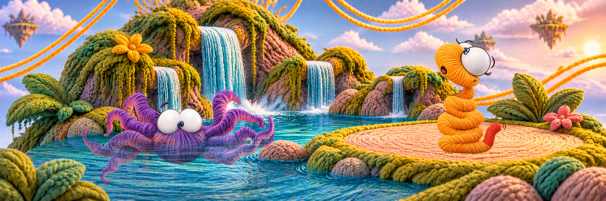

La primera impresión
En la Isla del Agua, Rowen nada tranquilamente cuando se encuentra con Ali, que se mueve por la orilla. Los dos se observan con curiosidad. Nunca habían conocido a alguien que se moviera de una manera tan diferente a la suya.

PARA PENSAR JUNTOS
¿Por qué a veces pensamos que alguien es raro?
*Elige una opción para continuar
Reflexión según la edad
Elige una opción para leer la reflexión.